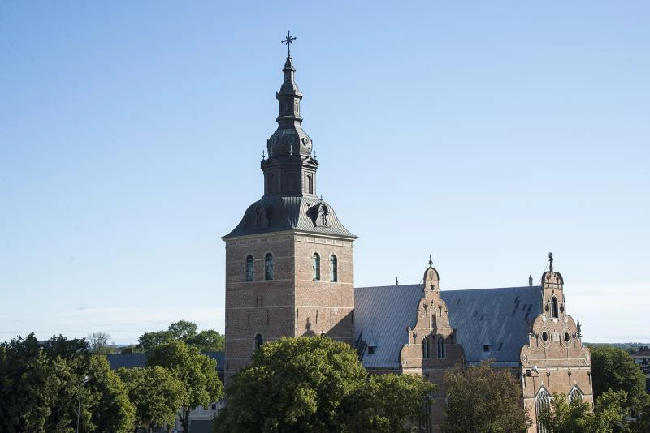
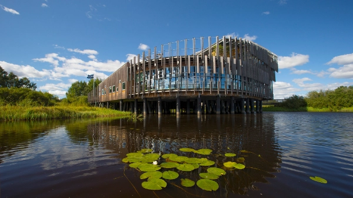
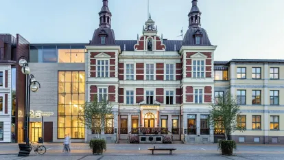

Heliga Trefaldighetskyrkan

Stadens stolthet och en av Sveriges vackraste renässanskyrkor. Kyrkan byggdes på 1600-talet av kung Christian IV och imponerar med sina ljusa valv, detaljerade altartavlor och storslagna arkitektur. En plats där historia och stillhet möts.
Naturum Vattenriket

Ett prisbelönt besökscentrum vid Helge å, med fokus på Kristianstads unika biosfärområde. Här får du lära dig om våtmarker, fågelliv och naturens mångfald – perfekt för både naturälskare och familjer som vill kombinera stadstur med naturupplevelser.
Stora Torg och Rådhuset

Kristianstads centrala torg med charmiga historiska byggnader och livliga caféer. Rådhuset, en vacker byggnad från 1800-talet, ligger mitt på torget och används fortfarande vid officiella evenemang. Torget är stadens hjärta – en plats där historia, shopping och stadsliv möts.